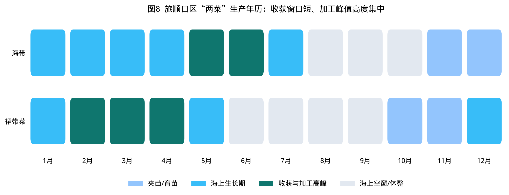
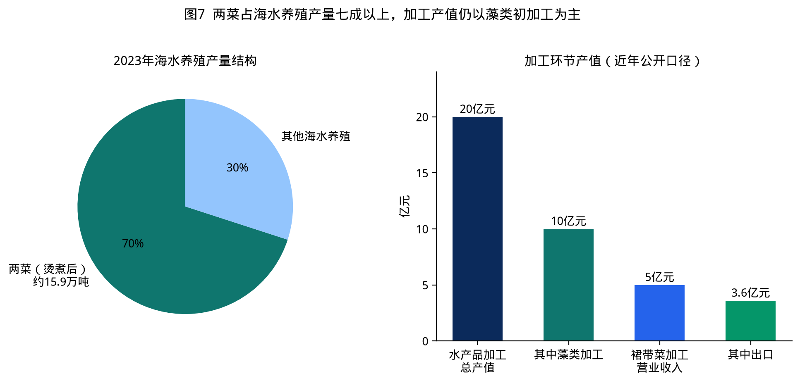
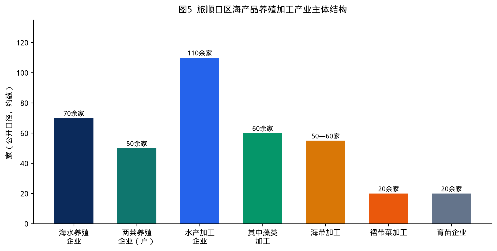
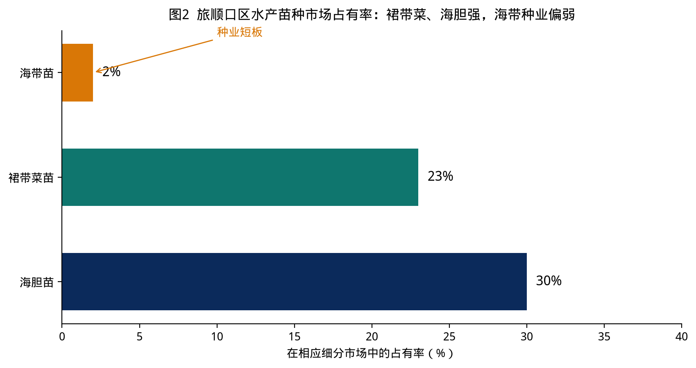
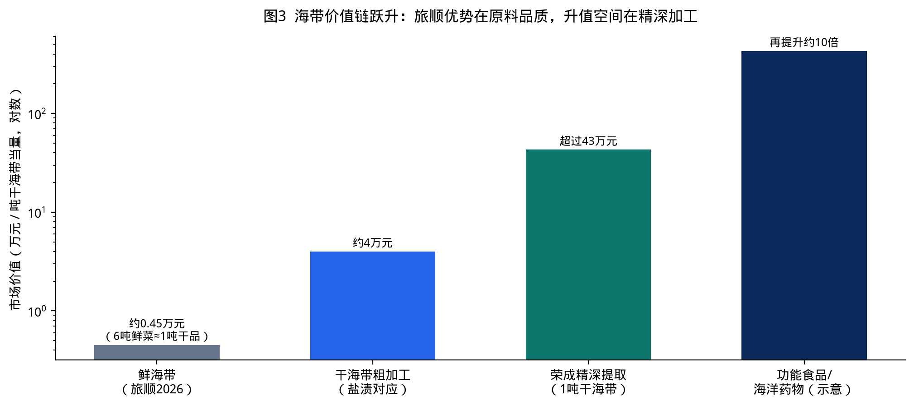
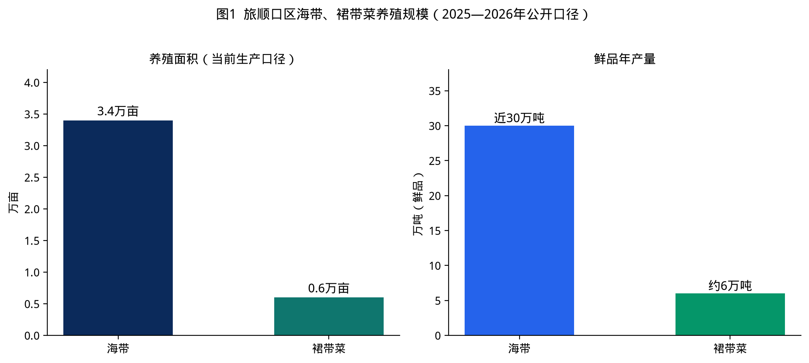
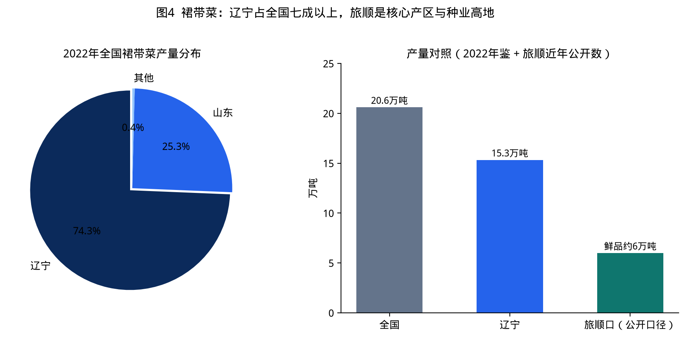
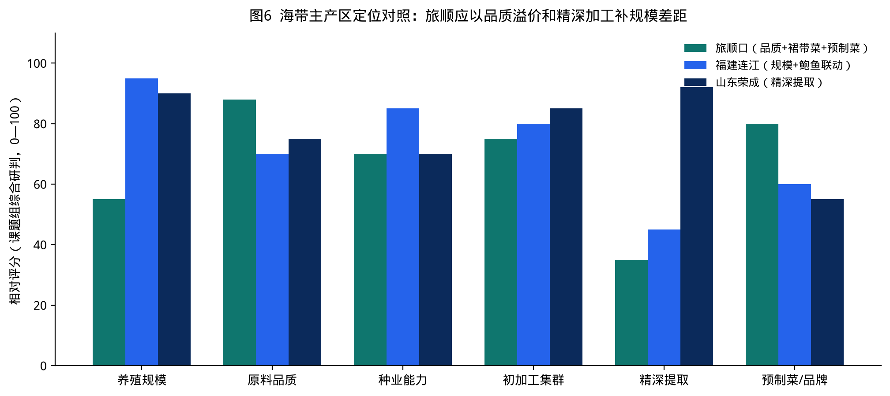

本完整版按“总报告 + 两菜专项 + 数据附件”组织。总报告回答旅顺口区海产品养殖加工产业“有多大、卡在哪、往哪走、先做什么”；“两菜”专项把海带、裙带菜从种苗、养殖、加工、贸易到品牌拆开写透；Excel《数据手册》把可核对数字、企业、地标、政策、对标与工程建议单列，避免口头口径在决策中被加总误用。
任务所列三份材料主题为：完整版纲要、海产品养殖加工产业专题分析报告、两菜产业发展报告。本完整版按上述三件套的常规结构补全正文、图表、项目库和附件。原始 Word 电子档未进入本工作区文件系统，凡涉及面积、产量、产值、市占率的数字，一律回源到可公开核验的统计公报、部门采访和部委公告，并在表格中标注口径冲突。
旅顺口区正处在三股力量的交汇点。第一股是国家“大食物观”和海洋经济高质量发展，海藻被重新定义为食物、生态和工业原料，而不只是“盐渍菜”。第二股是产区自身的窗口：2025—2026年连续两个采收季被中央和省市媒体集中报道，海带行情回暖，裙带菜预制菜内销已经跑通。第三股是约束收紧：近岸空间、劳动力季节峰值、初级加工同质化和统计口径混乱，开始限制决策精度。
因此，完整版不是再写一篇“丰收通讯”，而是把两份专题——海产品养殖加工、两菜产业发展——合成一份可报送、可立项、可核对的研究报告。
| 维度 | 边界 |
|---|---|
| 空间 | 旅顺口区行政辖区及确权养殖海域，重点铁山街道柏岚子、龙头街道郭家沟和盐场海域 |
| 品种 | 主线为海带、裙带菜；辅线为海参、鲍鱼、海胆、扇贝、赤贝及苗种 |
| 环节 | 育种育苗、海上养成、收获物流、初加工、精深加工、内外贸、品牌标准、金融保险、政策空间 |
| 时间 | 以2023—2026年公开数据为主，必要时回溯至2009年地标注册和2013—2021年国审品种 |
| 不纳入 | 远洋捕捞企业财务预测、未公开的海域使用权台账、未披露的企业利润表 |
海产品养殖加工业对旅顺口区有三重功能。对食物安全，它是“海上菜园”和海珍品供给基地；对县域经济，它是渔民就业、加工税收和出口创汇的稳定器；对城市品牌，它把世界遗产地老铁山、北纬39°和“旅顺海带”绑在同一套叙事里。2024年全区生产总值335.4亿元、增长5.1%，第一产业增加值27.3亿元、增长4.2%。渔业不是全区最大板块，但是辨识度最高、最难被其他区县替代的板块。
国家层面，2024年全国水产品总产量7357.59万吨，海水养殖2527.64万吨，藻类海水养殖产量302.94万吨、面积150.46千公顷，仍在扩张。地方层面，大连海水养殖产量长期全国领先，海参约占全国28%，虾夷扇贝约占90%，裙带菜媒体口径可占全国七成。旅顺口是这座海洋城市的“西部藻场”：它不拼长海县的底播扇贝体量，而拼两菜品质、海胆种业和预制凉菜标准。
窗口是种业成果、龙头企业和地标金融都已出现。约束是近岸空间、季节用工、同质加工和军事—遗产—旅游复合功能。战略含义很清楚：旅顺口的海产品产业必须走“有限空间里的高质量”而不是“无限海面里的大规模”。
| 要素 | 事实 | 产业含义 |
|---|---|---|
| 纬度与海域 | 辽东半岛最南端，北纬39°，黄渤海交汇 | 水流急、营养盐交换充分，藻体厚、色正、口感好 |
| 海域与岸线 | 海域2590.6平方公里，海岸线157公里 | 空间大，但可养水面不等于行政海域 |
| 渔业用海 | 39平方公里 | 真正可经营的蓝色农田，必须精耕 |
| 水质 | 2024年近岸海域优良水质比例100% | 地标、有机、出口的通行证 |
| 水温盐度 | 盐度高、温度低，适合海带、裙带菜 | 与福建海带形成品质差，而不是产量差 |
海带每年11—12月夹苗，经约6个月生长，5月中旬至6月中下旬收获，个体可达6米、单片七八斤。裙带菜主收获期更早，集中在冬春，2月末至4月上旬是传统出口菜窗口，水温低于5℃时菜质最好。海宝2号把可收割期向后延长15—20天，中宝1号把海带加工窗口拉到7月，这是用品种改造自然年历，而不是跟自然硬扛。

公开报道反复锁定的生产核心是铁山街道柏岚子以及龙头街道郭家沟、盐场海域。柏岚子是典型渔村：耕地少、渔船多，捕捞年产值曾达约5亿元量级，同时是两菜收获、海宝加工和海胆新品种诞生地。龙头街道盐厂、郭家沟一线承接另一组筏式养殖。岸上，苗室约20万立方米水体、加工车间和索道转运已经在柏岚子形成“船到岸、岸到车间”的短链。
老铁山是世界自然遗产地，旅顺口同时承担国防、旅游和城市功能。养殖布局必须接受三道红线：生态红线、军事设施保护、景观与旅游岸线。完整版因此把“向深远海和陆基园区转移增量、向现有筏区要质量和品种”作为空间策略，而不是在近岸继续平铺浮筏。
| 指标 | 数值 | 时点 | 备注 |
|---|---|---|---|
| 地区生产总值 | 335.4亿元，+5.1% | 2024 | 市统计局统一核算 |
| 第一产业增加值 | 27.3亿元，+4.2% | 2024 | 增加值口径 |
| 地方水产品产量 | 25.7万吨，+2.2% | 2024 | 区海洋发展局 |
| 海水养殖总产量 | 22万余吨 | 2023 | 约占大连市10%，近年约4%增速 |
| 一产渔业经济总产值 | 31亿元 | 2023 | 约占大连市7% |
| 进出口总额 | 177.5亿元，+25.1% | 2024 | 出口132.8亿元，+30% |
读这张表时有一个常见错误：用31亿元渔业总产值去除以27.3亿元一产增加值，去算“渔业贡献了全部一产”。增加值和总产值不是同一回事。正确读法是：渔业在一产中分量很重，加工和出口的增量主要记在二产和外贸，而不是记在一产增加值里。

两菜烫煮后15.9万吨、占海水养殖70%以上，这是产量结构。海参冻干、鲍鱼、海胆罐头和即食海珍的吨价远高于盐渍海带，这是价值结构。完整版把两条腿都保留：没有两菜，加工车间半年空转；没有海珍品，渔民收入和品牌溢价上不去。

70余家海水养殖企业、近50家两菜养殖主体、110家加工企业、20余家育苗企业，构成“小主体、大集群”。这是双刃剑：抗风险和就业吸收能力强，但标准、品牌和排污治理的交易成本高。规上层次已经出现盖世食品、海宝食品、鑫隆顺等，下一步需要的是联合体，而不是再复制几十家同质盐渍厂。

旅顺口苗种产业的成绩单漂亮：国家级虾夷马粪海胆种质资源场和良种场、国家级裙带菜良种场、国家藻类产业技术体系大连综合试验站都落在海宝。国审品种清单包括裙带菜海宝1号、海宝2号，海带中宝1号，海胆大金、丰宝1号，海参水院1号。问题同样清楚：海带苗市占约2%，意味着全区3.4万亩海带的种源安全并不能由本地种业闭环保证。中宝1号“只有海宝可以培育种苗”的报道，说明技术垄断和供种能力不足是同一枚硬币的两面——要扩繁，也要防把产区绑在单一供种点上。
主体模式仍是浮筏。农发行支持的蔚澜渔业海洋牧场项目规划浮筏约3650组、网箱约5140套，意图把海域流转给企业、合作社和大户，形成平台型牧场。这与“养殖户近50家”的两菜格局可以衔接：牧场出水面和基础设施，农户出经验和季节劳动力。多营养层次养殖（藻—参—贝—胆）在技术上匹配旅顺品种结构，应作为现有筏区改造的默认选项，而不是另铺一套海面。
加工产品分三层。第一层是盐渍、烘干压缩、佃煮即食，贡献产量和就业。第二层是海带醋、酱油、茶、速食汤、零食、面膜、提取盐，已经有产品、尚未成产业。第三层是褐藻糖胶、岩藻多糖、岩藻黄素、海藻功能食品，目前主要停留在海宝生物等点状企业。盖世食品把第一层做出了全国市占率，证明旅顺不是“不会做市场”，而是“大多数企业还停在代工和原料菜”。

海带内销网络已经铺到成都、重庆、江苏、新疆。裙带菜在出口端更强：加工公开口径年出口3万吨、3.6亿元，覆盖美、日及欧洲。RCEP在旅顺关区已经有盖世食品的首份原产地证书。短板是产地交易和价格指数缺失——产区还在“客商到码头拉货”，没有形成可发布的旅顺海带、旅顺裙带菜周度价格和等级指数。
农产品地理标志已有旅顺海带、旅顺鲍鱼、虎平岛海参、旅顺赤贝、旅顺脉红螺、旅顺海虾米。“旅顺海带”证明商标2009年注册，并进入国家和省地理标志运用促进重点名录。裙带菜精选产品有连续三年欧盟有机认证的公开表述。品牌资产并不贫瘠。真正的问题是用标企业少、终端消费者对“旅顺”二字的认知远低于对“大连海鲜”的认知，溢价大量漏在流通环节。
| 工具 | 已发生的事实 | 下一步 |
|---|---|---|
| 协会整体授信 | 大连银行向区藻类协会授信3亿元 | 把授信变成可循环的季节性收成贷款 |
| 地标质押 | 6家用标会员5500万元融资意向 | 扩大用标企业，完善估值与反担保 |
| 责任保险 | 福源海带加工厂获全国首张水产品食安责任险 | 覆盖主要加工企业和出口批次 |
| 政策性贷款 | 农发行海洋牧场1.39亿元投放 | 匹配陆基园区和提取线，而不仅是浮筏 |
| 财政撬动 | 上级资金900余万元，带动企业投资3000余万元 | 把补贴从设备转向种业、环保和公共品牌 |

在区海洋局2026年采收季口径下，全区海带养殖约3.4万亩、养殖户近50家、鲜菜年产量近30万吨。2026年5月29日前后已收获约11万吨，鲜菜700—800元/吨，同比高一百多元，全区产值预计近4亿元。这是一个“丰收且涨价”的年份，但不能把它外推成产业已经高价值化：4亿元对应近30万吨鲜菜，吨均约1300元量级（含部分加工），仍然是原料型产区的账。
旅顺海带的卖点是体长而宽、叶片厚、颜色正、口感好，适合火锅和即食。低温时间长的春天对养分积累更有利，2026年三四月升温慢，被一线描述为“特别粗壮”的年份。地理标志证明商标和农产品地理标志是把自然差异翻译成市场差异的法律工具。没有分级标准和溯源码，地标就只是墙上的牌子：同一片海的菜，在成都火锅店里仍可能按普通海带卖。
海带加工企业50—60家，产品以盐渍、烘干压缩、佃煮海带丝海带结为主，精深方向已出现醋、酱油、茶、汤、面膜、零食、提取盐，低质菜可进工业原料。与福建连江“藻鲍联动消耗鲜菜”、山东荣成“提取吃干榨净”相比，旅顺海带的工业出口通道最窄。这不是质量问题，是产业配套问题：缺少提取装置、环保设施、医药食品批文和能够消化副产物的化工伙伴。
中宝1号（GS-02-002-2021）以晚熟、7月中下旬产量提高63.9%、烫菜出成率提高10%以上为卖点，适宜辽宁、山东人工可控海水栽培，并被报道为结束辽宁海域半个世纪没有海带种苗的历史。完整版的政策含义是：海带种业振兴应列为两菜工程的第一优先，否则3.4万亩的品质优势无法稳定遗传。同时要建立第二供种点或联合体，避免单一企业产能成为产区风险。

2022年全国裙带菜产量20.61万吨，辽宁15.33万吨、占74.35%，山东5.21万吨。大连是国内最大生产基地，媒体常用“约占全国90%以上”描述大连份额，年鉴口径则是辽宁占七成以上。旅顺口在这一格局里有两个独特角色：一是核心养殖加工区，鲜品约6万吨、占全国约15%—17%；二是种业策源地，海宝1号、2号从这里走向辽东半岛。
| 品种 | 登记号 | 核心性状 | 产业作用 |
|---|---|---|---|
| 海宝1号 | GS-01-010-2013 | 平均吊重160千克/8米绳，+48.1% | 把高产做成国产主力，累计推广超10万亩 |
| 海宝2号 | GS-01-012-2014 | 晚熟15—20天，产量+30%以上，叶片无褶皱 | 把收获和加工窗口拉长，累计推广超5万亩 |
2013年以前，辽东半岛栽培企业需不断从日本或韩国引进种苗，成本高，还有生物安全问题。海宝1号解决的是“有没有自己的高产品种”，海宝2号解决的是“能不能错峰收、保叶片质量”。二者合在一起，才把旅顺从“买苗种菜”变成“卖苗种菜”。海宝食品还为大连三分之一以上养殖户供苗，这是产区级基础设施。
盖世以海藻、食用菌、海珍为原料做预制凉菜，大连+淮安双工厂，年产能约3万吨，产品出口60余国。2018年前，海藻沙拉困在滞后的国内标准里；公司推动修订GB2760后，大连以海藻沙拉为主的预制菜企业迅速增多，原料从约800元/吨涨到每吨四五千元。2021年调味裙带菜全国市占率36.19%。公司牵头起草工信部《预制凉菜》行业标准，参与国家重点研发“藻类食品品质提升与增值加工”，并获辽宁省科技进步二等奖。对产区而言，盖世证明：标准、渠道和预制菜，比再多一条盐渍线更能改变原料价格。
裙带菜加工企业近20家，年加工约4万吨、收入约5亿元、出口约3万吨/3.6亿元。主体产品长期是盐渍和淡干，近年转向即食叶、调味梗、海藻沙拉和孢子叶提取物。海宝食品针对25—35岁人群的优级干裙带菜叶礼盒，说明国内C端可以做，但大多数企业仍依赖B端和出口代工。
完整版把海珍品写进海产品总报告，是因为同一片筏区、同一组苗室、同一批渔民，往往海带、裙带菜、海参、鲍鱼、海胆一起干。割裂成“只谈两菜”会低估综合效益，也会高估单一品种的承受力。
| 品种 | 旅顺的位置 | 可观察事实 |
|---|---|---|
| 海胆 | 全国种业高地之一 | 苗近1亿枚、市占约30%；大金、丰宝1号国审；丰宝1号体重+27.7%，一年可收 |
| 海参 | 地标+冻干加工 | 虎平岛海参地标；海晏堂FD冻干线；海参“水院1号” |
| 鲍鱼 | 地标+历史育苗基础 | 旅顺鲍鱼地标；太平洋海珍品等曾是科技兴海示范；苗室可育鲍 |
| 赤贝/脉红螺/海虾米 | 地标矩阵 | 与两菜共用“旅顺出品”公用品牌 |
综合养殖的经济逻辑是：藻类生长吸收氮磷、提供荫蔽和碎屑，海参、鲍鱼、海胆利用藻场。政策上应鼓励“一亩海的立体账”而不是“一个品种的平面账”。陆基方面，区里已在谋划现代渔业产业园区、海洋生态与增殖放流基地、良种繁育中心，这是消化岸线约束的正确方向。
海带的国内需求正在“去沿海化”。川渝火锅把厚叶海带当成锅底标配，新疆、江苏接续。价格弹性仍然大：2026年鲜菜同比只高一百多元，说明供给充足时，品质溢价还没有系统实现。裙带菜国内市场是被标准打开的：没有GB2760修订，海藻沙拉进不了超市和连锁餐饮；有了标准，原料价可以翻数倍。盖世的客户结构（海底捞、安井、日本兼贞、法国福迪克斯等）说明，旅顺产品已经进入国内外头部餐饮供应链，缺的是第二、第三家能够跟跑的企业。
日本对裙带菜叶片质量苛刻，收获必须赶在菜体老化前完成，这正是海宝2号晚熟、无褶皱叶片的市场来源。出口执行“三同”（同线同标同质）的企业已经有海宝食品等。RCEP降低了原产地证明成本。风险在于：日本、韩国自身也有养殖，汇率、技术性贸易措施和“中国藻类”舆情都会冲击3.6亿元出口。完整版建议把出口市场从“日本一家独大”调成“日美欧+东南亚+国内”的三元结构，国内预制菜是对冲工具。
产区至今缺少权威的等级价格。完整版建议由区海洋发展局、藻类协会和龙头企业联合发布《旅顺海带/裙带菜采收周报》：鲜菜、盐渍、淡干三个规格，特级/一级/二级三个等级，码头价和出厂价两列。没有价格指数，地标质押估值、保险定价和农户议价都只能靠口头。
科技合作网络已经存在：中国科学院海洋研究所、中国海洋大学、大连海洋大学、国家藻类产业技术体系。成果转化的主通道是海宝。需要补的是三块公共科技：第一，海带苗规模化扩繁与多点供种；第二，收获和烫煮的机械化，降低5—6月用工峰值；第三，加工废水、盐渍废盐和低质菜的资源化，否则精深加工项目会在环评阶段夭折。
绿色发展不只是约束。大型海藻是蓝碳和水质过滤器。在近岸优良水质已经100%的前提下，两菜扩张必须证明“增产不增污、扩产可固碳”。建议把碳汇方法学和IMTA示范列入项目库，既对应生态文明考核，也为将来的生态产品交易留接口。

| 产区 | 强项 | 旅顺可学 | 旅顺不必学 |
|---|---|---|---|
| 福建连江 | 海带近10万亩、产值近30亿元；鲍鱼产值47亿元；加工规上65家、产值100多亿元 | 藻鲍联动消化鲜菜；育苗基地化；加工规上化 | 用近岸面积硬拼10万亩。旅顺没有这个海面，也不该牺牲遗产和国防岸线 |
| 山东荣成 | 渔业总收入千亿级；1吨干海带提取超43万元；研发人员可以占企业七成 | 吃干榨净的提取工艺；功能食品和海洋药物路径 | 复制荣成的全门类海洋产业。旅顺应做“小而尖”的藻类高地 |
| 日本三陆等 | 极严格的叶片分级、品牌和料理场景 | 分级、包装、季节错峰、菜质窗口管理 | 回头再去买种。国产海宝系列已经把这件事做完了 |
| 韩国 | 消费场景稳定（汤、拌），加工标准化 | 家庭即食和汤料标准化 | 把旅顺做成纯出口代工基地 |
| 编号 | 问题 | 表现 | 若不处理的后果 |
|---|---|---|---|
| P1 | 海带种业空心 | 苗市占约2%，供种集中 | 品质不能稳定遗传，极端气候年波动放大 |
| P2 | 价值链停在初加工 | 盐渍/烘干为主，提取空白 | 丰收年价低、歉收年无货，吨均价值锁定 |
| P3 | 收获窗口过窄 | 裙带菜2—4月、海带5—6月 | 用工贵、加工设备闲置、菜质来不及收 |
| P4 | 统计口径冲突 | 3.4万亩/6万亩，4亿/30亿 | 规划目标失真，品牌对外失信 |
| P5 | 近岸空间复合约束 | 渔业用海仅39平方公里 | 一扩面就撞生态、军事、旅游 |
| P6 | 主体散、品牌漏 | 110家加工企业，终端认知弱 | 内卷压价，地标溢价被渠道拿走 |
| P7 | 金融覆盖窄 | 授信3亿，落地意向5500万 | 季节性资金链仍靠民间拆借 |
| R1 | 气候与病害 | 升温快则菜质差、化皮 | 晚熟品种不足时集中烂菜 |
| R2 | 出口技术壁垒 | 日韩标准、舆情、汇率 | 3.6亿元出口波动 |
| R3 | 环保与用工 | 盐渍废水、季节性劳动力 | 新上提取线受阻，采收成本抬升 |
有限海面、无限价值链。不以扩面论英雄，而以种业自主、吨均价值、地标溢价、就业稳定和水质不退步论英雄。两菜做基本盘，海珍品做价值盘，预制菜和提取物做增量盘。
| 指标 | 近期（2027） | 中期（2030） | 口径 |
|---|---|---|---|
| 海带生产面积 | 稳定在3.4万亩左右 | 重点优化结构，不追求破6万亩 | 生产口径 |
| 海带苗本地供种率 | 显著高于当前约2% | 主产筏区以国审品种为主 | 协会+种业统计 |
| 两菜精深加工收入占比 | 在现有即食/调味基础上再上提取中试 | 提取物和功能食品成为可统计门类 | 规上企业报表 |
| 地标用标企业 | 覆盖主要加工规上和愿意分级的养殖场 | 旅顺海带成为火锅渠道可识别品牌 | 市场监管/协会 |
| 金融覆盖 | 授信转化率明显提高，责任险扩面 | 收成贷款+保险成为默认工具 | 银行/保险 |
| 水质 | 近岸优良比例不下降 | 两菜碳汇可计量 | 生态环境 |
| 工程 | 建设内容 | 牵头建议 | 优先级 |
|---|---|---|---|
| 1. 海带种业振兴 | 中宝1号扩繁车间、第二供种点、示范筏区替代外埠苗 | 区海洋发展局、海宝、中科院海洋所 | 最高 |
| 2. 早中晚熟搭配 | 海宝1号/2号分区布局，错峰收割与加工排产 | 藻类协会 | 最高 |
| 3. 海藻活性物质中试 | 岩藻多糖/褐藻糖胶/膳食纤维中试线，先吃低质菜 | 海宝生物、盖世、园区 | 高 |
| 4. 预制凉菜跟跑计划 | 再培育1—2家能够进入连锁餐饮供应链的企业 | 区工信/商务、盖世（标准外溢） | 高 |
| 5. 地标溢价工程 | 溯源码、分级包装、火锅渠道认证、用标目录 | 市场监管、知识产权、协会 | 高 |
| 6. IMTA与陆基园区 | 藻参贝胆立体示范；苗种+加工进园区 | 海洋发展局、自然资源 | 中高 |
| 7. 协会金融扩面 | 3亿元授信转化、责任险扩面、价格指数服务贷款 | 金融局、大连银行、渔业互助保险 | 中高 |
| 8. 统计与周报 | 统一生产/地标口径；发布采收周报 | 统计局、海洋发展局 | 立即 |
与已有项目的衔接：蔚澜渔业海洋牧场贷款应导向设施升级和立体养殖，避免只增加平面浮筏；上级900万元级的设备补贴应调整权重，提高种业、环保和公共检测的份额。
建议成立区级“两菜与海产品产业链专班”，海洋发展局牵头，市场监管、商务、工信、金融、生态环境、铁山和龙头街道参加，每月对照八项工程。
海域：存量筏区先提质，增量进牧场和深远海试点。岸线：加工进园，禁止新上无环保设施的小盐渍点。人才：给种业和提取岗位单独的引才和技能培训。资金：财政从“补设备”转向“补公共品”——检测、溯源、标准、保险保费。
旅顺口区是中国北方“两菜”品质和裙带菜种业的高地：海带以3.4万亩、鲜品近30万吨支撑国内火锅与即食原料；裙带菜以6000余亩、鲜品约6万吨和约15%—17%的全国份额，加上海宝系列国审品种与盖世预制凉菜标准，构成出口与内销双轮。发展方向不是与连江比面积，而是把北纬39°的菜，卖成有种源、有分级、有提取、有品牌的产品。
2026年是行情年：鲜菜700—800元/吨，全区产值预计近4亿元，成都一个市场就要4000吨。风险是把行情当成产业升级完成。专项建议三条硬措施：以中宝1号为核心做供种；以特级/一级/二级对接火锅与即食两条渠道；以低质菜进提取中试，避免好菜坏菜一个价。
裙带菜面积只有海带的约六分之一，但加工收入和出口贡献不成比例地高。海宝1号、2号已经把“买日韩苗”变成“卖国产苗”。盖世把“只能出口”变成“国内海藻沙拉爆品”。专项建议：保护种业公共属性（多点供种）、支持第二家预制菜企业跟跑、孢子叶提取做成海宝生物的规模化产品，而不是样品。
同一组筏、同一批工人、同一套烫煮设备。协同点有四个：早中晚熟搭配拉长车间负荷；藻参贝胆立体养殖提高亩均；公共检测和废水处理按园区配置；公用品牌“旅顺海洋菜”统领海带地标和裙带菜有机出口。
与总报告第十三、十四章一致，两菜专项单独强调四件必须进年度计划的事：中宝1号扩繁、采收周报、提取中试、火锅渠道分级。面积指标维持生产口径3.4万亩+0.6万亩，不再把6万亩写进年度考核。
两菜已经证明自己能养活加工集群、撑起出口和预制菜第一股。下一阶段的失败模式是“继续讲丰收故事、继续上同质盐渍线”；成功模式是“种业自主、分级溢价、提取补位、金融覆盖”。旅顺口区有条件成为中国北方海洋蔬菜的种业中心和品质标杆，但只有把统计口径和项目库先做对，这个位置才站得住。
盖世食品（北交所、预制凉菜、市占率36.19%）、海宝渔业（国家级良种场、万亩牧场）、海宝食品（加工出口与供苗）、海宝生物（褐藻糖胶）、鑫隆顺、竹岛、润腾、海晏堂（海参冻干）、柏岚子养殖场、蔚澜渔业（牧场贷款主体）。详细事实见Excel表“05-重点企业”。
旅顺海带、旅顺鲍鱼、虎平岛海参、旅顺赤贝、旅顺脉红螺、旅顺海虾米；裙带菜欧盟有机认证（报道）；GB2760修订；《预制凉菜》行标；辽宁省/国家级裙带菜出口示范区。见Excel表“06-地理标志与标准”。
藻类协会3亿元授信、地标质押、食安责任险、农发行1.39亿元牧场贷款、上级资金900余万元撬动3000余万元、RCEP原产地证。见Excel表“07-政策金融”。
图1 两菜养殖面积与鲜品产量；图2 苗种市场占有率；图3 海带价值链跃升；图4 全国裙带菜格局；图5 产业主体结构；图6 连江—荣成—旅顺定位对照；图7 产量与加工产值结构；图8 两菜生产年历。
说明：本报告全部定量判断均可回溯到上述公开来源或附件Excel。对口径冲突采取并列标注，不自行“揉成一个数”。报告供研究与决策参考，不构成投资建议，也不代替行政许可和规划环评。